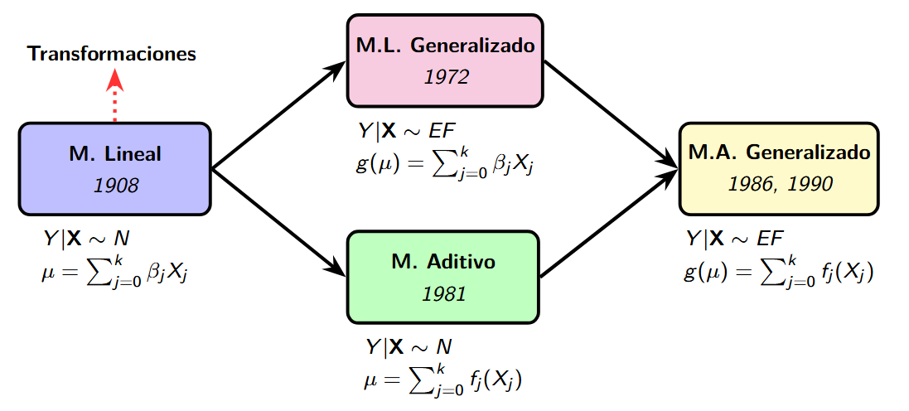

1. Introducción
Enfrentamos el problema de explicar una variable de respuesta \(Y\) en relación a un vector de variables explicativas \(\mathbf{X} = (X_1, \ldots, X_k)\). Historicamente, han existido diferentes acercamientos a la modelación de esta relación.

GLM+AM -> GAM" width="400">2. Construcción del modelo
Describe aquí la construcción del modelo aditivo generalizado.
3. Ejemplo
Incluye aquí un ejemplo detallado.